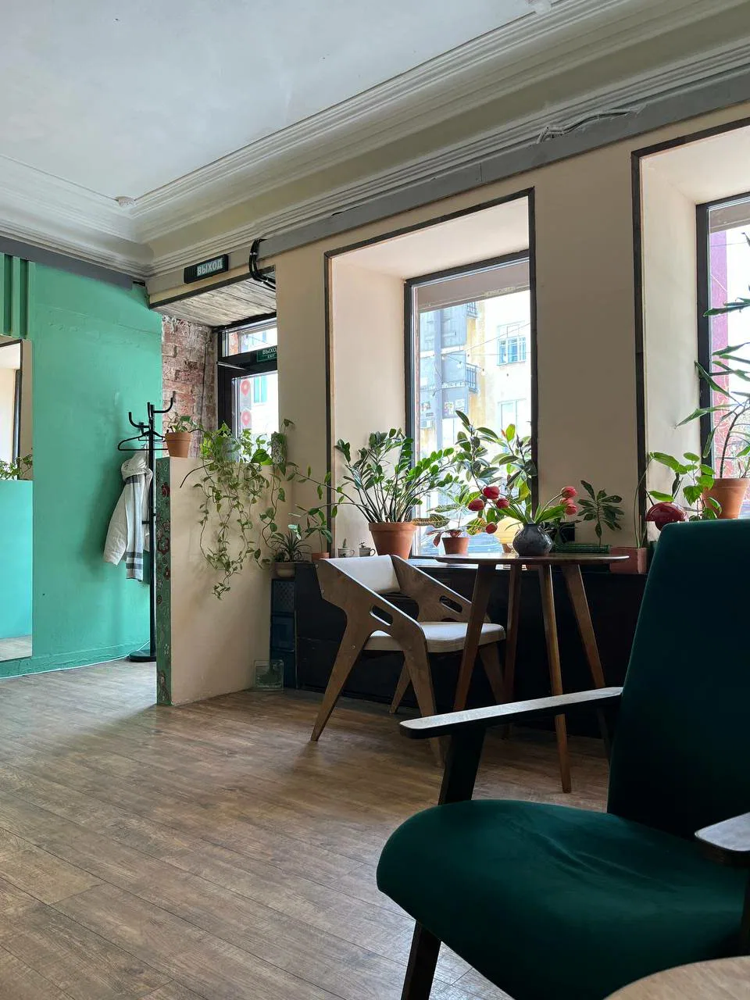
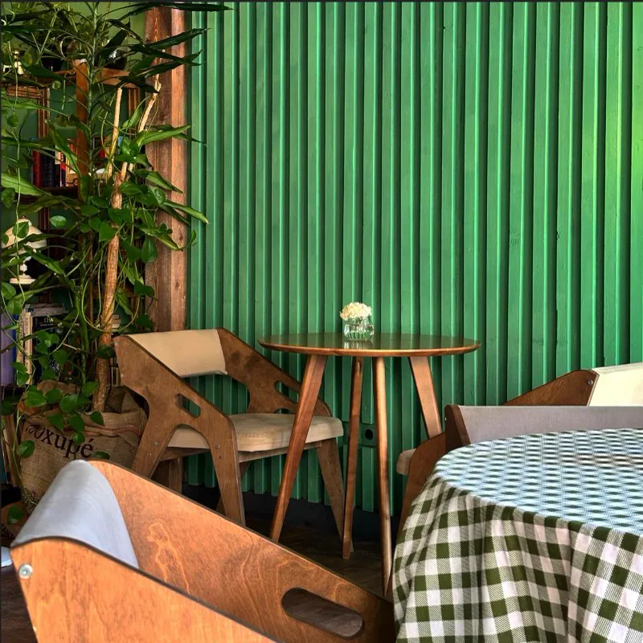
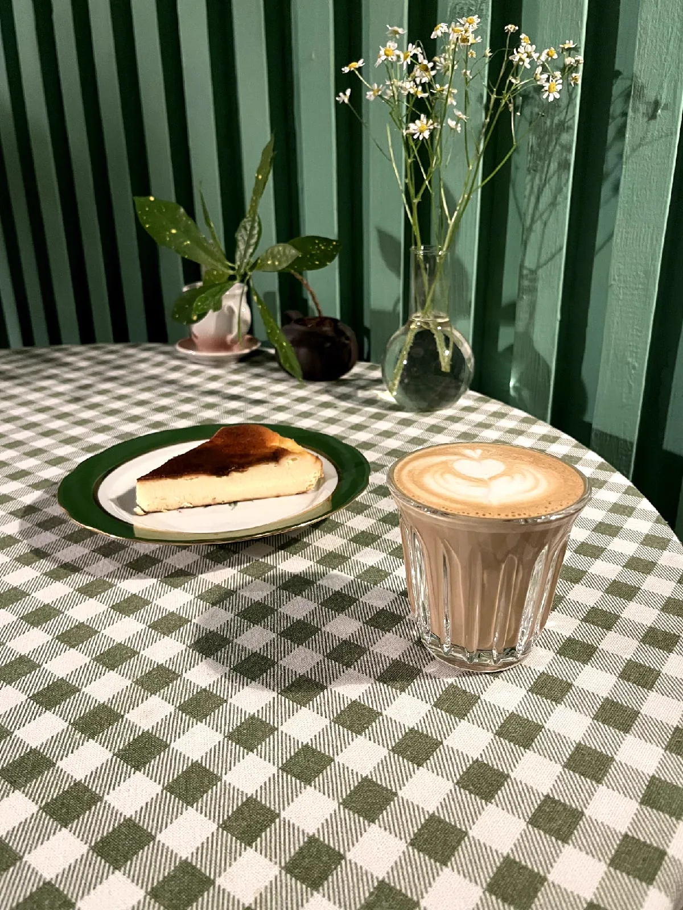
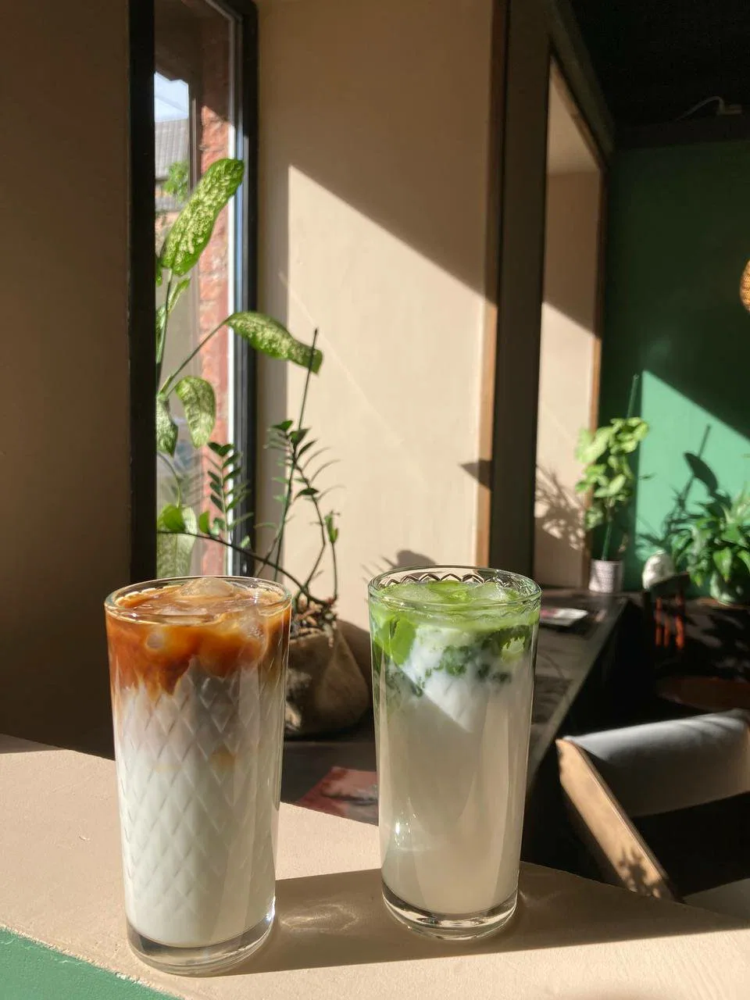
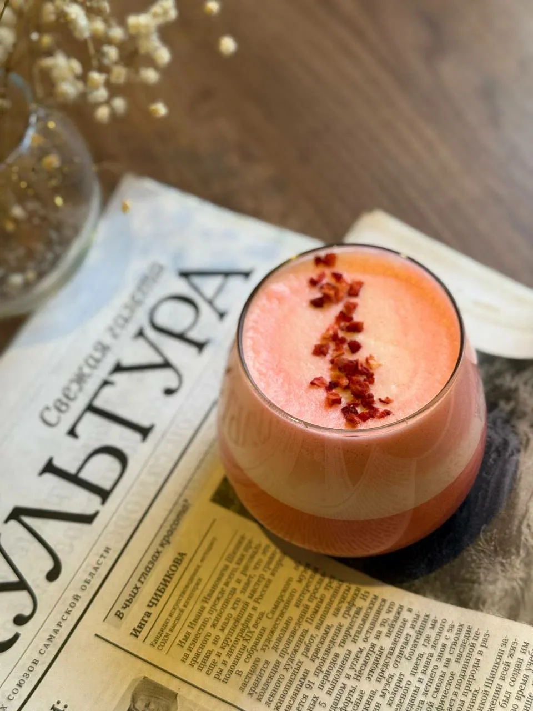
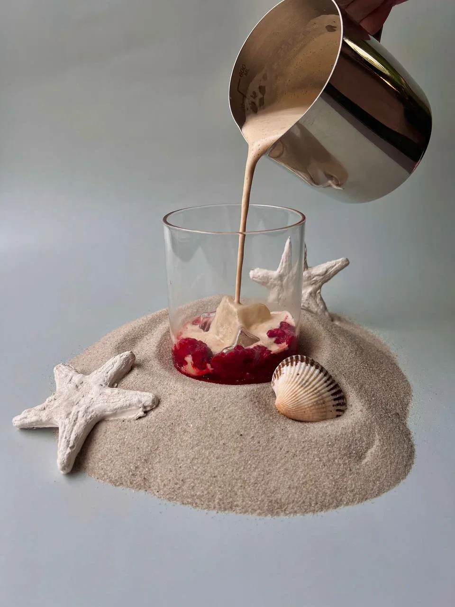
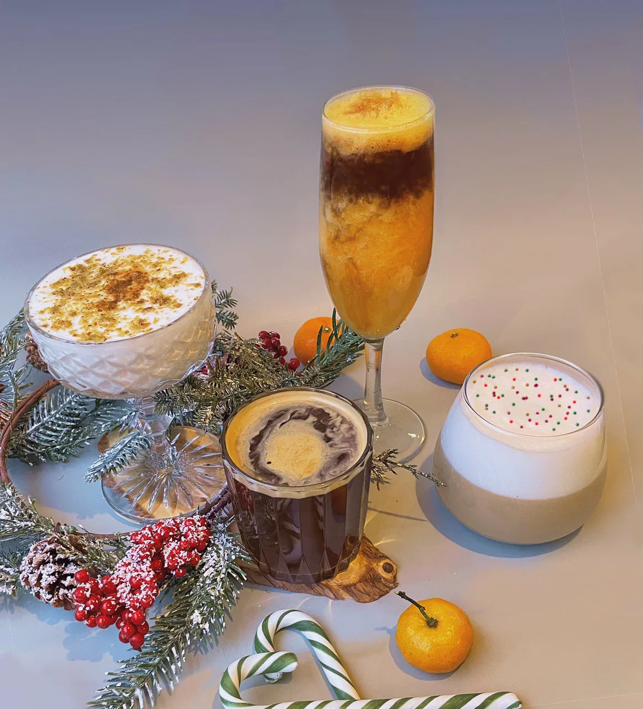

Кофейня-оранжерея в Самаре
Место, где кофе
встречается с природой
Сотни растений, солнечный свет и запах свежей обжарки в старом центре города.
Аромат свежего кофе
Среди сотен растений
Место, где хочется остаться
Каждая чашка — маленький ритуал
Добро пожаловать во Флору
Оранжерея
на Чапаевской
«Флора» началась с простого наблюдения: в центре города почти не осталось мест, где можно выдохнуть.
Мы нашли помещение со старыми потолками на Чапаевской, покрасили стены в цвет молодой листвы и начали привозить растения. Сначала десять, потом сто. Теперь зелени здесь больше, чем стульев, и это соотношение нас полностью устраивает.
Мы варим кофе на светлой обжарке, взбиваем матчу, по утрам печём канеле и помним постоянных гостей по именам. Заходите как в гости: с книгой, с собакой, с хорошими новостями.
Свет, зелень
и немного пара






Почему Флора
Альтернативное молоко без доплаты
Овсяное, миндальное или кокосовое — по слову бариста, а не по прайсу.
Авторские напитки и матча
Сезонная линейка, которую мы придумываем сами. Матчу взбиваем венчиком.
Десерты собственной витрины
Канеле, тарталетки и то, что испекли сегодня утром.
Летняя веранда
Зелёная стена, деревянные кресла и солнце до самого вечера.
Можно с животными
Вода для собак всегда стоит у входа. Корги здесь свои.
С собой
Кофе и еда навынос в стакане с нашим цветком.
Зелень здесь не декор,
а вторая половина рецепта.
Гости говорят
«Обожаю это место, кафе покоряет с порога своим интерьером: всё в зелени, много дерева, чувствуешь себя как в уютной оранжерее. Здесь приятно скрыться от городской суеты. Люблю приходить сюда, чтобы отдохнуть от толпы. Народа всегда немного, играет спокойная музыка. Моё уважение Роману за то, что сохраняет традиции приготовления и подачи чая: всегда выходит вкусно и как должно быть.»
«Место, в которое хочется возвращаться. Каждое посещение вызывает гастрономическое удовольствие, любая из позиций сезонного меню, что я пробовал, не оставила меня равнодушным. Десерты высокого качества и по-домашнему вкусные. Отдельное спасибо бариста за создание уюта и комфорта в заведении.»
«Невероятно классная и нишевая кофейня с уникальным интерьером, невероятным обслуживанием и удивительными напитками. Вдобавок ко всему, десерты здесь самые вкусные в городе по моему субъективному мнению.»
Как нас найти
- Понедельник
- Вторник
- Среда
- Четверг
- Пятница
- Суббота
- Воскресенье